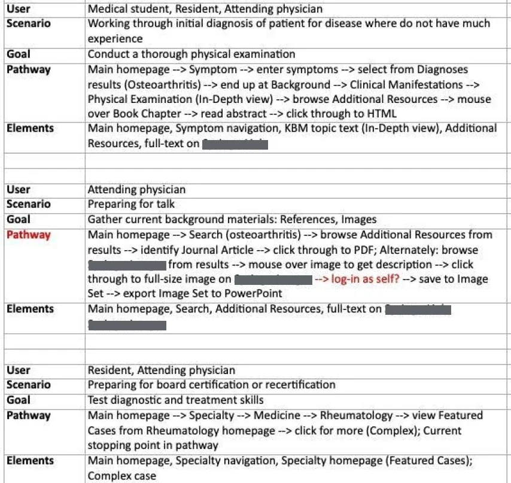
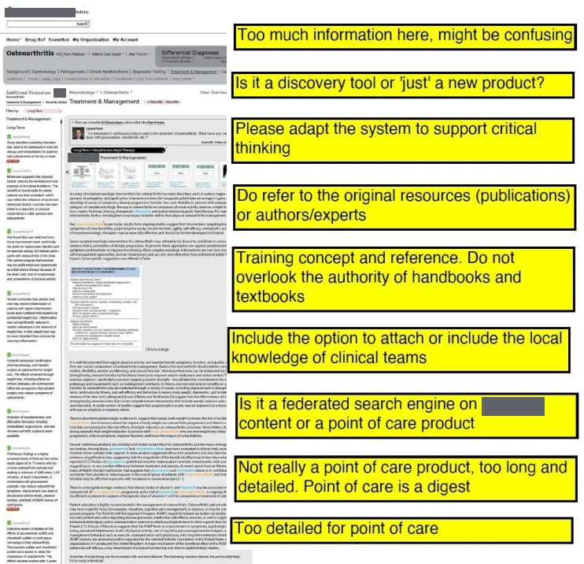

Research · Web app
Details generalized for confidentialityMedical learning tool

(view full size)Outcome
Executives reached a clear no-go on a new medical learning app, backed by research, before an estimated $amount withheldM investment was made. Sales agreed with the market-risk analysis. The no-go was consistent with a strategy already shifting from build to buy, and the learnings were applied to established products instead. The future of the product line was decided by evidence rather than effort already invested.
Problem
Sales of traditional medical textbooks were declining. Would an app be a viable solution? The business needed an analysis of unmet user and customer needs to make an informed strategy decision. Millions in resources and brand reputation were at risk if we launched a product without sufficient demand. Our team set out to understand user behaviors, risks, and revenue potential before anyone committed.
My role
I owned the product vision and did the product manager’s work, including analysis of customer needs, product differentiation, and alignment with business objectives. I ran the research, made user flows, reviewed wireframes, provided sample content, and worked with a developer to build a prototype. A department executive provided oversight and opened doors to internal and external stakeholders. We started as a skunkworks with no budget, so learning fast was a must.
Constraints
Four constraints bounded the research.
| Constraint | What it meant |
|---|---|
| No budget | No formal research program. I worked from what was available: market intelligence reports, Sales, and customers |
| A skunkworks team, with a department executive for oversight | Learning had to be fast, and leadership opened doors to stakeholders |
| Millions in resources and brand reputation at stake | The decision had to rest on evidence before anyone committed |
| A company strategy already shifting from build to buy | A new product had to show a better return from building than from buying |
Guiding principle
Sunk cost is not a reason to launch.
A competitor analysis showed a market of text-heavy, visually similar products. Medicine is a visual field, but you would not know it from the products on the market. PDFs were common but not handy for mobile use. One user interview summed up the mood with “Textbooks are dead!” YouTube view counts on peer-to-peer videos indicated what students actually watched.
So we asked whether the answer was a multimedia app, and prototyped a module to find out. User archetypes with sample flows deepened my empathy with users. The design decisions followed, such as a top menu to reduce scrolling, search where people expect it, resources easy to find, and plenty of images and video.
Then we tested with target customers, and the reaction was mixed. They were positive on accessible images and video but confused by everything we had packed in. At a Sales retreat, the message from customers was clear. They would only pay if the product was comprehensive and covered all diseases at launch.


(view full size)I would have liked to refine the concept. The prototype had real strengths and we knew how to simplify it. But the research said the product customers would pay for was not the product we could build. Comprehensive coverage at launch meant an estimated $amount withheldM investment. Continuing would have been a decision driven by the effort we had already invested.
I recommended no-go, and Sales agreed with the analysis of market risk. What we learned about visuals, PDFs on mobile, and confusing features went into tailoring established products instead.
Learning
I would build a lighter-weight prototype quickly to get customer input earlier in the process. The prototype we built was higher fidelity and took months to build. We might have reached the same no-go months earlier, or found a narrower product worth pursuing, if we had asked customers “Would you pay for this?” before designing further.